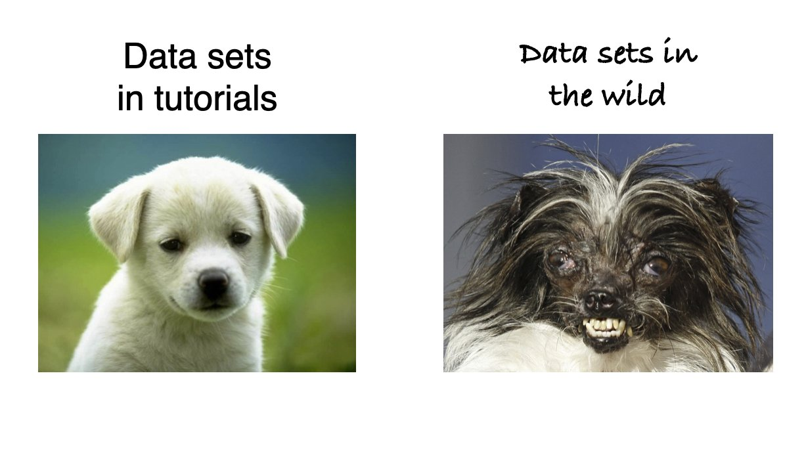

Data manipulation
Bio300B Lecture 3
Richard J. Telford (Richard.Telford@uib.no)
Institutt for biovitenskap, UiB
17 August 2025
Data cleaning
Penguins
# A tibble: 344 × 8
species island bill_length_mm bill_depth_mm flipper_length_mm body_mass_g
<fct> <fct> <dbl> <dbl> <int> <int>
1 Adelie Torgersen 39.1 18.7 181 3750
2 Adelie Torgersen 39.5 17.4 186 3800
# ℹ 342 more rows
# ℹ 2 more variables: sex <fct>, year <int>Importing data
First step of almost any data analysis
read_delim()fromreadrpackageread_excel()fromreadxlpackage
Lots of arguments to help import data correctly
Find the data rectangle and import just that.
Paths
Use RStudio projects
Use relative paths
Pipes
Analysis:
- With penguins data
- Drop rows with NA sex
- find mean bill length per species per sex
First solution
Nested functions
Second solution
Third solution
pipe solution
Pipe puts result of left hand side into first available argument on right hand side
|>native R pipe%>%magrittrpipe
Tidy data
“Happy families are all alike; every unhappy family is unhappy in its own way”
— Tolstoy
Tidy data
- easy to work with
- use standard tools to manipulate, visualise and analyse
- can reuse code from other projects
What are tidy data
- Every column is a variable.
- Every row is an observation.
- Every cell is a single value.

Untidy data
| Date | 17.06.2016 | 21.06.2016 | 23.06.2016 | 26.06.2016 |
|---|---|---|---|---|
| Time | 10:00 | 11:00 | 11:00 | 13:00 |
| Weather | Sunny_PartlyCloudy | Cloudy_Fog | Cloudy_Sunny | Cloudy_Rainy_Windy_Fog |
| Observer | LV_AH | LV | LV | LV |
| E01a | 0 | NA | 0 | 0 |
| E01b | 0 | NA | 0 | 0 |
| E01c | 0 | NA | 0 | 0 |
| E01d | 0 | NA | 0 | 0 |
| E01e | 0 | NA | 0 | 0 |
The heart of your analysis pipeline
Reshaping data
Long data vs wide data

Wide data
sample Brachy PHTH HPAV RARD
1 1 17 5 5 3
2 2 2 7 16 0
3 3 4 3 1 1
4 4 23 7 10 2
5 5 5 8 13 9Wide format data needed for ordinations and related methods used in Bio303
Making longer data
tidyr::pivot_longer()
Making wider data
tidyr::pivot_wider()
Processing data with dplyr
Key dplyr functions
select()filter()mutate()summarise()group_by()
Normally load dplyr with library(tidyverse)
Selecting columns
dplyr::select()
# A tibble: 344 × 2
species bill_length_mm
<fct> <dbl>
1 Adelie 39.1
2 Adelie 39.5
# ℹ 342 more rowsSelecting adjacent columns
# A tibble: 344 × 4
bill_length_mm bill_depth_mm flipper_length_mm body_mass_g
<dbl> <dbl> <int> <int>
1 39.1 18.7 181 3750
2 39.5 17.4 186 3800
# ℹ 342 more rowsSelect helpers
ends_with()
# A tibble: 344 × 4
species bill_length_mm bill_depth_mm flipper_length_mm
<fct> <dbl> <dbl> <int>
1 Adelie 39.1 18.7 181
2 Adelie 39.5 17.4 186
# ℹ 342 more rowsstarts_with()contains()matches()regular expressions
Your turn
[1] "species" "island" "bill_length_mm"
[4] "bill_depth_mm" "flipper_length_mm" "body_mass_g"
[7] "sex" "year" How would you make a data frame with
- just species and island
- without year
- with species and the length measurements
Filtering rows
dplyr::filter()
# A tibble: 124 × 8
species island bill_length_mm bill_depth_mm flipper_length_mm body_mass_g
<fct> <fct> <dbl> <dbl> <int> <int>
1 Gentoo Biscoe 46.1 13.2 211 4500
2 Gentoo Biscoe 50 16.3 230 5700
# ℹ 122 more rows
# ℹ 2 more variables: sex <fct>, year <int>One or more logical statements
==>=<!=
near()
Problem:
[1] FALSE%in%
Problem
# A tibble: 192 × 8
species island bill_length_mm bill_depth_mm flipper_length_mm body_mass_g
<fct> <fct> <dbl> <dbl> <int> <int>
1 Gentoo Biscoe 46.1 13.2 211 4500
2 Gentoo Biscoe 50 16.3 230 5700
# ℹ 190 more rows
# ℹ 2 more variables: sex <fct>, year <int>|OR
Solution
# A tibble: 192 × 8
species island bill_length_mm bill_depth_mm flipper_length_mm body_mass_g
<fct> <fct> <dbl> <dbl> <int> <int>
1 Gentoo Biscoe 46.1 13.2 211 4500
2 Gentoo Biscoe 50 16.3 230 5700
# ℹ 190 more rows
# ℹ 2 more variables: sex <fct>, year <int>between()
Problem
# A tibble: 11 × 8
species island bill_length_mm bill_depth_mm flipper_length_mm body_mass_g
<fct> <fct> <dbl> <dbl> <int> <int>
1 Adelie Dream 37 16.9 185 3000
2 Adelie Dream 37.5 18.9 179 2975
# ℹ 9 more rows
# ℹ 2 more variables: sex <fct>, year <int>Solution
# A tibble: 11 × 8
species island bill_length_mm bill_depth_mm flipper_length_mm body_mass_g
<fct> <fct> <dbl> <dbl> <int> <int>
1 Adelie Dream 37 16.9 185 3000
2 Adelie Dream 37.5 18.9 179 2975
# ℹ 9 more rows
# ℹ 2 more variables: sex <fct>, year <int>Partial string matches
Problem
Want to filter by partial text match
solution: stringr package
# A tibble: 124 × 8
species island bill_length_mm bill_depth_mm flipper_length_mm body_mass_g
<fct> <fct> <dbl> <dbl> <int> <int>
1 Gentoo Biscoe 46.1 13.2 211 4500
2 Gentoo Biscoe 50 16.3 230 5700
# ℹ 122 more rows
# ℹ 2 more variables: sex <fct>, year <int>Regular expressions for more powerful matching.
How would you
# A tibble: 344 × 8
species island bill_length_mm bill_depth_mm flipper_length_mm body_mass_g
<fct> <fct> <dbl> <dbl> <int> <int>
1 Adelie Torgersen 39.1 18.7 181 3750
2 Adelie Torgersen 39.5 17.4 186 3800
# ℹ 342 more rows
# ℹ 2 more variables: sex <fct>, year <int>Get a data frame with
- Male Gentoo penguins
- Penguins with a mass > 1000 g
- Penguins from Dream or Biscoe Island
Mutating columns with mutate()
Make a new column or change an existing column
# A tibble: 344 × 10
species island bill_length_mm bill_depth_mm flipper_length_mm body_mass_g
<chr> <fct> <dbl> <dbl> <int> <int>
1 adelie Torgersen 39.1 18.7 181 3750
2 adelie Torgersen 39.5 17.4 186 3800
# ℹ 342 more rows
# ℹ 4 more variables: sex <fct>, year <int>, body_mass_kg <dbl>,
# bill_ratio <dbl>Useful functions for mutate
- mutate character columns with
stringr,glue - mutate factor columns with
forcats - mutate dates with
lubridate
Summarising data with summarise
# A tibble: 1 × 2
max_mass mean_bill_length
<int> <dbl>
1 6300 43.9Useful functions
- limits
min()max() - centre
mean()median() - spread
sd() - number
n()n_distinct()
Grouping data
# A tibble: 344 × 8
# Groups: species, island [5]
species island bill_length_mm bill_depth_mm flipper_length_mm body_mass_g
<fct> <fct> <dbl> <dbl> <int> <int>
1 Adelie Torgersen 39.1 18.7 181 3750
2 Adelie Torgersen 39.5 17.4 186 3800
# ℹ 342 more rows
# ℹ 2 more variables: sex <fct>, year <int>Mutate and summarise now work per group
Mutating grouped data
Analysis per group
# A tibble: 344 × 10
# Groups: species [3]
species island bill_length_mm bill_depth_mm flipper_length_mm body_mass_g
<fct> <fct> <dbl> <dbl> <int> <int>
1 Adelie Torgersen 39.1 18.7 181 3750
2 Adelie Torgersen 39.5 17.4 186 3800
# ℹ 342 more rows
# ℹ 4 more variables: sex <fct>, year <int>, bill_length_mean <dbl>,
# bill_length_centred <dbl>Summarising grouped data
Summary per group
NA - Not available - missing data
NA are contagious: what is 5 + NA?
Counting rows
# A tibble: 13 × 4
species island sex n
<fct> <fct> <fct> <int>
1 Adelie Biscoe female 22
2 Adelie Biscoe male 22
# ℹ 11 more rows# A tibble: 13 × 4
species island sex n
<fct> <fct> <fct> <int>
1 Adelie Biscoe female 22
2 Adelie Biscoe male 22
# ℹ 11 more rowsMutating joins
Merge two tibbles

left_join()
. . .
Other joins
inner_join()full_join()
Filtering joins
Further reading
Wickham et al. (2023) R for Data Science
Wickham, H. Advanced R